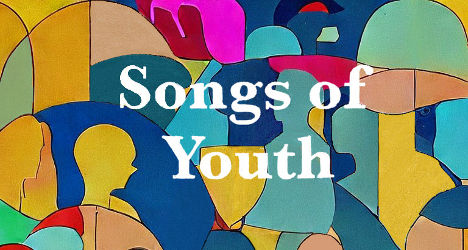

Bes
Klein
ensemble
Ciel, air et vents
O hemel, lucht en wind! Bes Klein zingt over dromerige avondluchten, straffe stormen en een laatste ademtocht. Word weggeblazen door Rudolf Eschers grandioze canons in Ciel, air et vents, meegevoerd door de wilde westenwind van Edward Elgar. Hoor vlagen van Zweedse volksmelodieën in Susanne Rosenbergs Pust en de hemelse harmonieën in Evening Prayer van Joanna Marsh. Een programma over het ongrijpbare, dat altijd aanwezig is.
Over Bes Klein
Wij zijn Bes Klein, acht zangers die elkaar vonden in onze liefde voor samen zingen. Onze paden kruisten in koren als het VU-Kamerkoor en het Nederlands Studenten Kamerkoor. De energie en klank die we met zijn achten ontdekten, daar moesten we wat mee. Ons concertdebuut was in het voorjaar van 2022. Het repertoire is breed en strekt van oude muziek tot nieuw geschreven werk, van volksmuziek tot improvisatie. We willen samen ontdekken en samen groeien. Voor ons eigen plezier, maar ook voor het jouwe.
Wij zijn Saskia de Man, Lieke Maier, Anna Jongeneel, Dorien Salet, Janusz Meylahn, Gerben Groeneveld, Bas Cornelissen en Vincent Martig, en wij zijn Bes Klein.
“Je bent een dief van je eigen genot als je niet naar Bes Klein komt”
Vorige projecten
Wat is jong zijn? In Songs of Youth vertellen de acht zangers van Bes Klein ensemble een verhaal over jeugdigheid, keuzes maken en volwassen worden, met werken van Libby Larsen, Caroline Shaw, improvisaties en een nieuw werk voor 8 stemmen. Speciaal voor dit project schreef Diederik van der Laag het werk Míro Celia, una rosa que en el prado. Een jeugdig en veranderlijk stuk op tekst van Sor Juana Inés de la Cruz, een middeleeuwse Mexicaanse geestelijke en feministe.
Concerten op 10 maart 2023 in de Nassaukerk in Amsterdam en 12 maart 2023 in het Stadsklooster in Utrecht.
Contact
Volg ons op Instagram, of stuur ons een mailtje via info@besklein.nl.